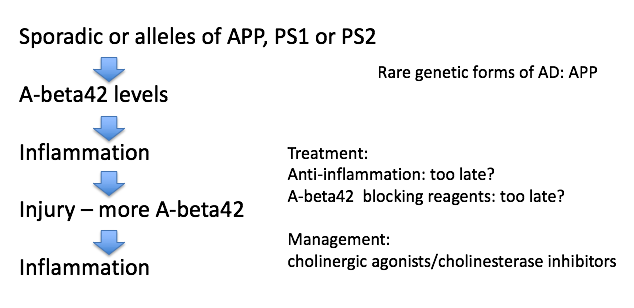
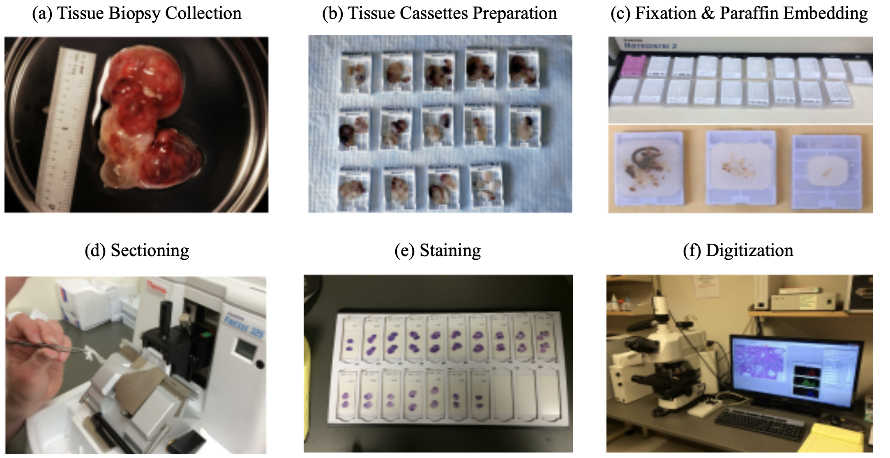
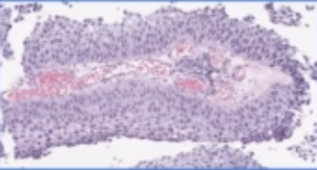
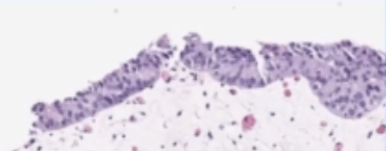
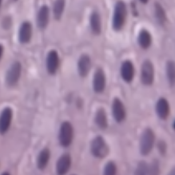
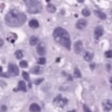

digital tracking
view markdownalzheimer’s

- overview
- age-associated - tons of people get it
- doesn’t kill you, secondary complications like pneumonia will kill you
- rate is going up
- very expensive to treat
- declarative memories are affected by Alzheimer’s
- these are memories that you know
- first 2 areas to go in Alzheimer’s
- hippocampus
- patient HM had no hippocampus
- no anterograde memory - learning new things
- hippocampus stores 1 day of info
- offloading occurs during sleep (REM sleep) to prefrontal cortex, temporal lobe, V4
- dreaming - might see images as you are offloading
- patient HM had no hippocampus
- basal forebrain - spread synapses all over cortex
- uses Ach
- ignition key for entire cortex
- hippocampus
- alzheimer’s characteristics only found in autopsy
- amyloid plaques
- maybe A-beta causes it
- A-beta comes from APP
- A-beta42 binds to itself
- prion (starts making more of itself)
- this cycle could be exacerbated by injury
- clumps and attracts immune system which kills local important cells
- this could cause Alzheimer’s
- rare genetic mutations in A-beta increase probability you get Alzheimer’s
- anti-inflammation may be too late
- can take drugs that increase Ach functions - ex. cholinergic agonists, cholinesterase inhibitors
- tangles
- tangles made of protein called Tau
- most people think these are just dead cells resulting from Alzheimer’s but some think they cause it
- amyloid plaques
parkinson’s
- loss of substantia nigra pars compacta dopaminergic neurons
- when you get down to 20% what you were born with
- dopaminergic neurons form melanin = dark color
- hits to head can give inflammation
- know what they need to do - don’t have enough dopamine to act
- treat with L Dopa -> something like dopamine -> take out globus pallidus
- Lewy bodies are clumps of alpha synuclein - appear at dopaminergic synapses
- clumps like A-beta42
- associated with early-onset Parkinson’s (rare) associated with genetic mutations
- bradykinesia - slowness of movement
- age can give parksinson’s
- no evidence that toxins can induce parkinsons
- PTP/ pesticides can induce Parkinson’s in test animals
- 1/500 people
pathology
basics
- pathologists work with tissue samples either visually or chemically
- anatomic pathology relies on the microscope whereas clinical pathology does not
- pathologists convert from tissue image into written report
- when case is challenging, may require a second opinion (v rare)
- steps (process takes 9-12 hrs):

- tissue is surgically removed
- more tissue collected is generally better (gives more context)
- this procedure is called a biopsy
- much is written down at this step (e.g. race, gender, locations in organ, different tumors in an organ) that can’t be seen in slide alone
- fixation: keeps the tissue stable (preserves dna also) - basicallly just soak in formalin
- dissection: remove the relevant part of the tissue
- tissue processor - removes water in tissue and substitute with wax (parafin) - hardens it and makes it easy to cut into thin strips
- microtone - cuts very thin slices of the tissue (2-3 microns)
- staining
- H & E - hematoxylin and eosin stain - most popular (~80%) - colors the cells in a specific way, bc cells are usually pretty transparent
- hematoxylin stains nucleic acids blue
- eosin stains proteins / cytoplasm pink/red
- immunohistochemistry (IHC) - tries to identify cell lineage: 10-15%
- identifies targets
- use antibodies tagged with chromophores to tag tissues
- gram stain - highlights bacteria
- giemsa - microorganisms
- others…for muscle, fungi
- H & E - hematoxylin and eosin stain - most popular (~80%) - colors the cells in a specific way, bc cells are usually pretty transparent
- viewing
- usually analog - put slide on something that can move / rotate
- whole-slide image (WSI) - resulting entire slide
- tissue microarray (TMA) - smaller, fits many samples onto the same slide
- with paige: put slide through digital scanner (only 5% or so of slides are currently digital)
- later on, board meets to decide on treatment (based on pathology report)
- usually some discussion betweeon original imaging (pre-biopsy) and pathologist’s interpretation
- resection - after initial diagnosis, often entire tumor is removed (resection)
- tissue is surgically removed
- how can ai help?
- can help identify small things in large images
- can help with conflict resolution
- after (successful) neoadjuvant chemotherapy, problem becomes more difficult
- very few remaining cancer cells
- cancer/non-cancer cells become harder to distinguish (esp. for prostate)
- tumor bed is patchily filled with cancer cells - need to better clarify presence of cancer
papers
- Deep Learning Models for Digital Pathology (BenTaieb & Hamarneh, 2019)
- note: alternative to histopathology are more expensive / slower (e.g. molecular profiling)
- to promote consistency and objective inter-observer agreement, most pathologists are trained to follow simple algorithmic decision rules that sufficiently stratify patients into reproducible groups based on tumor type and aggressiveness
- magnification usually given in microns per pixel
- WSI files are much larger than other digital images (e.g. for radiology)
- DNNs can be used for many tasks: beyond just classification, there are subtasks (e.g. count histological primitives, like nuclei) and preprocessing tasks (e.g. stain normalization)
- challenge: multi-magnification + high dimensions (i.e. millions of pixels)
- people usually extract smaller patches and train on these
- this loses larger context
- one soln: pyramid representation: extract patches at different magnification levels
- one soln: stacked CNN - train fully-conv net, then remove linear layer, freeze, and train another fully-conv net on the activations (so it now has larger receptive field)
- one soln: use 2D LSTM to aggregate patch reprs.
- challenge: annotations only at the entire-slide level, but must figure out how to train individual patches
- e.g. use aggregation techniques on patches - extract patch-wise features then do smth simple, like random forest
- e.g. treat as weak labels or do multiple-instance learning
- could just give slide-level label to all patches then vote
- can use transfer learning from related domains with more labels
- people usually extract smaller patches and train on these
- challenge: class imbalance
- can use boosting approach to increase the likelihood of sampling patches that were originally incorrectly classified by the model
- challenge: need to integrate in other info, such as genomics
- when predicting histological primitives, often predict pixel-wise probability maps, then look for local maxima
- can also integrated domain-knowledge features
- can also have 2 paths, one making bounding-box proposals and another predicting the probability of a class
- alternatively, can formulate as a regression task, where pixelwise prediction tells distance to nearest centroid of object
- could also just directly predict the count
- can also predict survival analysis
- Clinical-grade computational pathology using weakly supervised deep learning on whole slide images (campanella et al. 2019)
- use slide-level diagnosis as “weak supervision” for all contained patches
- 1st step: train patch-level CNNs using MIL
- if label is 0, then all patches should be 0
- if label is 1, then only pass gradients to the top-k predicted patches
- 2nd step: use RNN (or another net) to combine info across S most suspicious tiles
- Human-interpretable image features derived from densely mapped cancer pathology slides predict diverse molecular phenotypes (diao et al. 21)
- An artificial intelligence algorithm for prostate cancer diagnosis in whole slide images of core needle biopsies: a blinded clinical validation and deployment study (pantanowitz et al. 2020 - ibex)
- 549 train, 2501 internal test slides, 1627 external validation
- predict cancer prob., gleason score 7-10, gleason pattern 5, perneural invasion, cancer percentage
- algorithm
- GB classifies background / non-background / blurry using hand-extracted features for each tile
- each tile gets predicted probability for 18 pre-defined classes (e.g. GP 3)
- ensemble of 3 CNNs that operate at different magnifications
- aggregation: 18-probability heatmaps are combined to calculate slide-level scores
- ex (for predicting cancer): sum the cancer-related channels in the heatmap , apply 2x2 local averaging, then take max
datasets
- ARCH - multiple instance captioning dataset to facilitate dense supervision of CP tasks
cancer
overview
- tumor = neoplasm - a mass formation from an uncontrolled growth of cells
- benign tumor - typically stays confined to the organ where it is present and does not cause functional damage
- malignant tumor = cancer - comprises organ function and can spread to other organs (metastasis)
- relation network based aggregator on patches
- lymphatic system drains fluids (non-blood) from organs into lymph nodes
- cancer often mestastasize through these
- staging - describes where cancer is located and where it has spread
- clinical staging - based on non-tissue things
- pathological staging - elements of staging pTNM
- size / depth of tumor “T”
- number of lymph nodes / how many had cancer “N”
- number of metastatic foci in non-lymph node organ “M”
- these are combined to determine the cancer stage (0-4)
- prognosis - chance of recovery
treatments
- chemo
- traditional chemotherapy disrupts cell replication
- hair loss and gastrointestinal symptoms occur bc these cells also rapidly replicate
- adjuvant chemotherapy - after cancer is removed, most common
- neoadjuvant chemo - after biopsy, but before resection (when very hard to remove)
- traditional chemotherapy disrupts cell replication
- targeted therapies
- ex. address genetic aberration found in cancer cells
- immunotherapy - enhance body’s immune response to cancer cells (so body will attack these cells on its own)
- want the antigens on the tumor to be as different as possible (so they will be characterized as foreign)
- to measure this, can conduct total mutational burden (TMB) or miscrosatellite instability (MSI) test
- genetic tests - hard to do by looking at glass slide
- some tumors express receptors (e.g. CTLA4, PD1) that shut off immune cells - some drugs try to block these receptors
prostate cancer
- tests
- feel with finger
- antigen test - blood test
- ultrasound - probe inserted
- biopsy - needle inserted to take out tissue
- grading
- stages (they have subdivisions, e.g. IIA, IIB, IIC)
- I - early, slow-growing
- II - small, but risky
- III - likely to spread
- IV - has spread beyond the prostate
- recurrent - has come back after treatment
- in addition to stages 0-4, prostate cancer is also given Gleason score
- look at 2 biggest cancer regions and identifies them as a Gleason pattern from 3 (best) to 5 (worst)
- this results in a sum (e.g. 5+4, 3+4) - note 3+4 is not same as 4+3
- stages (they have subdivisions, e.g. IIA, IIB, IIC)
- treatments
- prostatectomy - remove the prostate
- radiation therapy - kills specifically cancer cells
- radiative seed implants - implated into prostate to kill cancer cells
- cryotherapy - kill prostate cancer cells by freezing them
- hormone therapy - block hormone which grows prostate cancer cells
- chemotherapy
-
human benchmarks
- Interobserver Variation in Prostate Cancer Gleason Scoring: Are There Implications for the Design of Clinical Trials and Treatment Strategies?
- 71 patients, 213 scored observations, 3 pathologists
- weighted pairwise kappas: 0.16, 0.29, 0.23
- (unweighted): 0.15, 0.29, 0.24
- Interobserver reproducibility of Gleason grading of prostatic carcinoma: General pathologists
- 38 biopsies, 41 pathologists
- consensus grade groups: [2-4, 5-6, 7, 8-10]
- overall kappa: 0.435
- Interobserver variability in Gleason histological grading of prostate cancer
- 407 slides, 2 pathologists
- primary gleason: k=0.34
- secondary gleason: k=0.37
- sum: k=0.43
- Interobserver Variation in Prostate Cancer Gleason Scoring: Are There Implications for the Design of Clinical Trials and Treatment Strategies?
- ai papers
- Learning Whole-Slide Segmentation from Inexact and Incomplete Labels using Tissue Graphs (anklin et al. 2021)
- SegGini, a weakly supervised segmentation method using graphs
- constructs a tissue-graph for WSI (node is tissue region)
- weakly-supervised segmentation via node classification
- data
- UZH dataset - 5 five TMAs with 886 spots (each 3100×3100 pixels) with complete pixel-level annotations and inexact image-level gradess
- SICAPv2 dataset - 155 WSIs and 18,783 tiles of size 512×512 with complete pixel annotations
- SegGini, a weakly supervised segmentation method using graphs
- Learning Whole-Slide Segmentation from Inexact and Incomplete Labels using Tissue Graphs (anklin et al. 2021)
bladder cancer
- tests
- urinalysis - look for things like blood in urine
- urine cytology - use microscope to look for cancer cells in urine
- urine tests for specific tumor parkers
- cystoscopy - invasive lens takes image of bladder
- tests lead to a biopsy
- grading
- invasiveness: can be non-invasive, invasive (grows into deeper layers of bladder)
- superficial = non-muscle invasive - hasn’t grown into main muscle layer of bladder
- grade: again asigned stages 0 - IV based on TNM
- low-grade = well-differentiated
- high-grade (worse) = poorly differentiated, undifferentiated
- invasiveness: can be non-invasive, invasive (grows into deeper layers of bladder)
- human benchmark
- The reliability of staging and grading of bladder tumours. Impact of misinformation on the pathologist’s diagnosis (olsen et al. 1993)
- 4 consultant pathologists
- 40 biopsy specimens of bladder tumours staging invasion
- grading using Bergkvist classification
- kappa < 0.50
- The reliability of staging and grading of bladder tumours. Impact of misinformation on the pathologist’s diagnosis (olsen et al. 1993)
- ai papers
- Bladder cancer in the time of machine learning: Intelligent tools for diagnosis and management (2021)
- bladder cancel ranks tenth in worldwide absolute cancer incidence
- non-pathology
- Integrating Diagnosis Rules into Deep Neural Networks for Bladder Cancer Staging - bladder cancer staging from MR images
- Deep Learning Approach for Assessment of Bladder Cancer Treatment Response - bladder cancer treatment assessment from CT scans
- cystoscopy - few DNN papers here
- pathology
- Urinary Bladder Tumor Grade Diagnosis Using Online Trained Neural Networks (2003)
- 92 patients with BC
- 90%, 94.9%, and 97.3%, for Grade I, II, and III respectively
- builds on Neural network-based segmentation and classification system for automated grading of histologic sections of bladder carcinoma (2002)
- Deep Learning Predicts Molecular Subtype of Muscle-invasive Bladder Cancer from Conventional Histopathological Slides (woerl et al. 2020) - predict molecular subtype using histopathology images in Cancer Genome Atlas Urothelial Bladder Carcinoma dataset
- Urinary Bladder Tumor Grade Diagnosis Using Online Trained Neural Networks (2003)
- Bladder cancer in the time of machine learning: Intelligent tools for diagnosis and management (2021)
-
bladder basics
-
muscles in bladder contract and force urine out
-
urethelium - inner layer that is able to stretch (has many layers) - this is where cancer originates
- in situ - cancer only here
- invasive - goes into the muscle
- if it goes into the urine, can easily test (also usually triggers blood in the urine)
-
biopsy usually looks mostly at urethelium and vessels right next to it (will not go all the way to the muscle, as this could puncture the bladder)
- very targeted (unlike prostate biopsy), slide will come with some tag like “in area with redness” from scopy
- 4 possibilities
- big mass - should see cancer
- inflammation - could be cancer or many other things (e.g. atypia vs carcinoma)
- 4 possibilities
- get many parts / sites of biopsies
- very targeted (unlike prostate biopsy), slide will come with some tag like “in area with redness” from scopy
-
-
H & E slide
- shape:
| papillary | flat | can also have a combo |
|---|---|---|
 |
 |
- grade:
| low | high |
|---|---|
 |
 |
- when shape is flat, grade often can’t be determined reliably
- lots of names for uncertain (e.g. upump - uncertain malignant potential, or atypia)
- much easier to decide shape than grade
- once you find high grade, look for invasiveness (and deeper layers are worse)